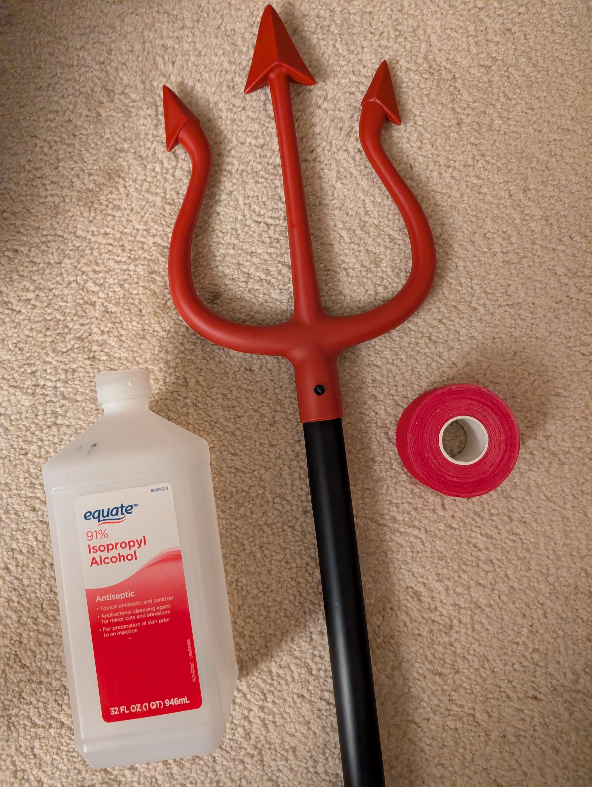

I dressed as the devil last Halloween. As part of my costume, I set my red devil's trident alight, which was surprisingly easy and simple to do after some experimenting.
The only materials you need are a plastic devil's trident (I got mine from Spirit Halloween), isopropyl alcohol, water, and color-matching red athletic tape (Amazon).

Simply wrap the prongs of the trident tightly with several layers of tape, soak them in a solution of isopropyl alcohol and water (mine was probably around 60% alcohol 40% water by mass, but I didn't precisely measure), and ignite them. The water in the solution keeps the flame cool enough to prevent the plastic from melting, presumably by evaporating and carrying off the thermal energy that would otherwise heat the plastic. The principle is the same as with the classic "burning dollar bill" experiment. Here's a demo of the result:
The flame only burns for ~10 seconds before flickering out. Long enough to impress a few people, but not long enough to do anything elaborate with it. Perhaps this can be improved by using a different alcohol-water ratio, laying down more layers of tape, or using an entirely different, more absorbant material to coat the prongs. On the other hand, extending the burn time might be a bad idea.